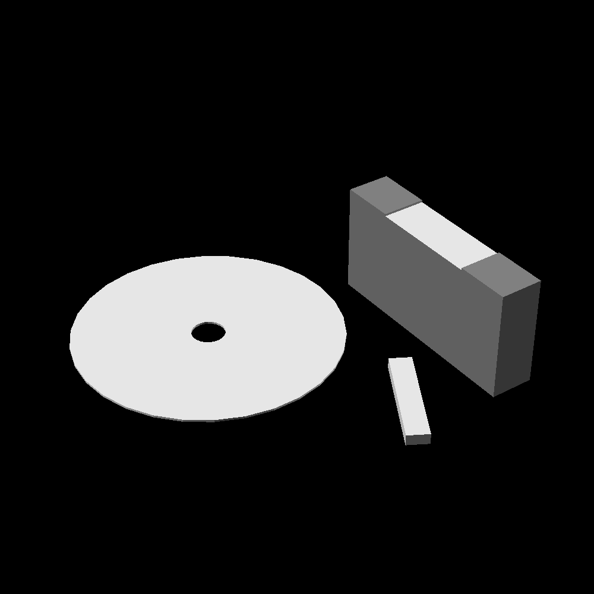

link to this page
Data storage

Data storage technologies in common use throughout the Stareater Expanse.
5D optical data storage
Data can be written into innert transparent materials like fused quartz using femtosecond laser pulses, which induce a local defect that affects intensity and polarization of any light passing through it. In this way data is encoded in 5 dimensions: the three spatial dimensions of the defect's position as well as intensity and polarization offset. This allows data densities where each bit could take up a volume only 2nm across, but in practice this method does not store each bit individually so the size of each defect encoding the bits is going to be much larger than that.
A compact disc made of fused quartz such as that shown on the right (12cm in diameter) is able to store 2.88e15 bits of data for billions of years without degradation. This is a convenient format but notably much of it's thickness serves purely structural purpose, limited to an aerial data density of 2.5869e13 bits/cm2 regardless of thickness.
The thicker block shown next to it would store only 16TB of data, with even more robustness added by the extra material.
Tape drives utilizing similar technology could make much fuller use of the achievable data density up to a theoretical maximum of 1.25e20bits/cm3 if one were to use thinnest possible ribbon of fused quartz with absolutely no support structure, or somewhere in the order of magnitude below that with more reasonable practical designs, fairly easily reaching tens to hundreds of exabytes of capacity in a pocketable format.
electronic data storage (todo)
DNA data storage (todo)